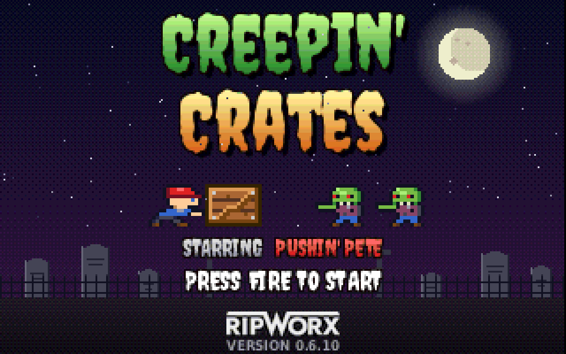
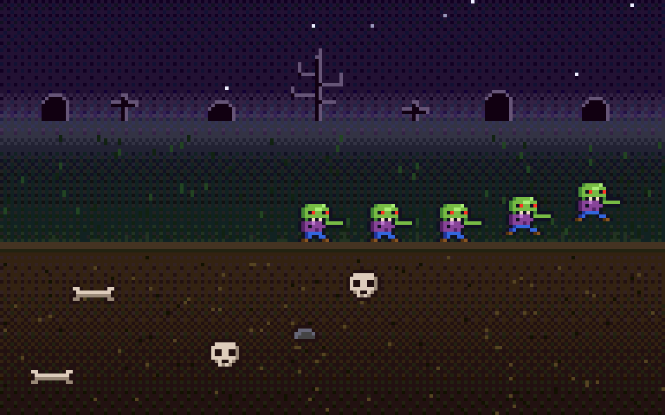
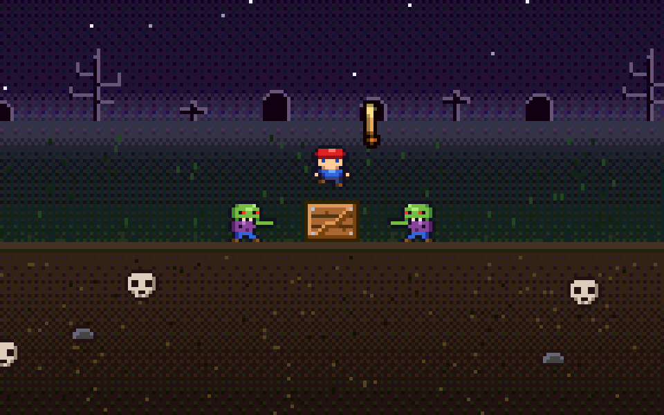
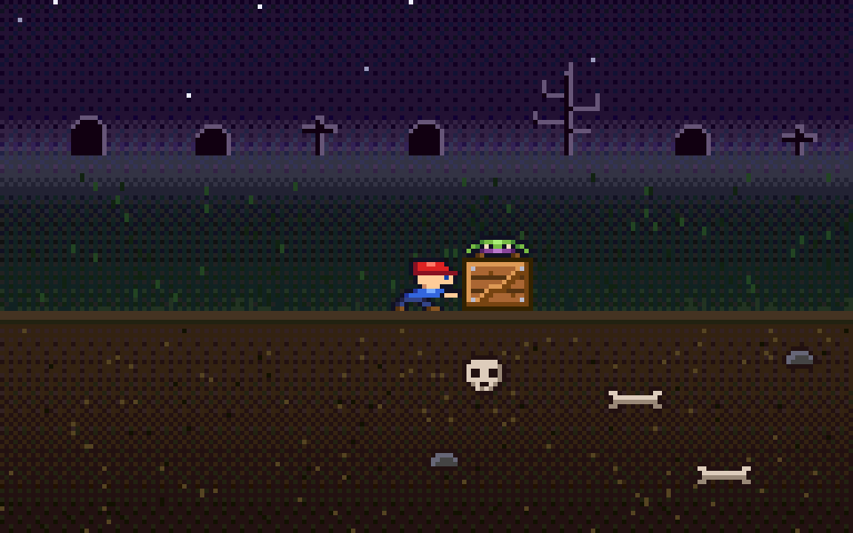
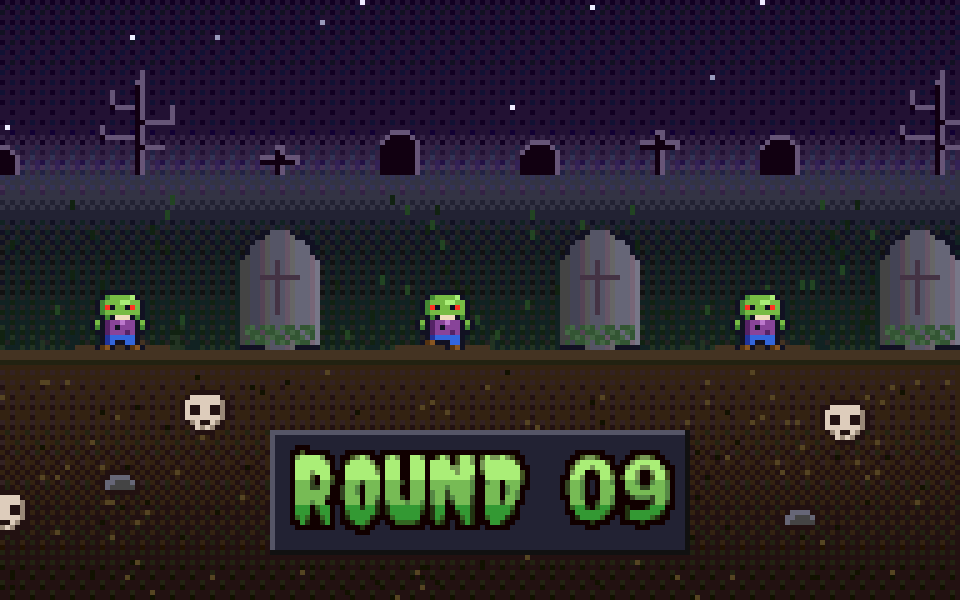
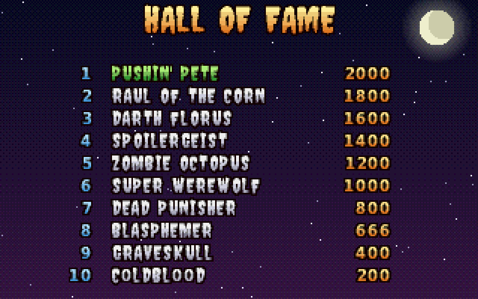

THE CRATE YARDEL DEPÓSITO DE CAJAS
Every night, when the moon comes up, the crates behind the old cemetery start to twitch, and out climb the zombies. Pushin' Pete can't fight them with his hands: push a crate and it slides until it hits something, squashing every zombie in its way.
Cada noche, cuando sale la luna, las cajas detrás del viejo cementerio empiezan a sacudirse, y de adentro salen los zombis. Pushin' Pete no puede pelear con las manos: empuja una caja y se desliza hasta chocar con algo, aplastando a cada zombi que encuentre en el camino.
On the MEGA65, in 256 colors, with characters that move pixel by pixel, stereo music on four SID chips and new scenes under the moon.
En la MEGA65, en 256 colores, con personajes que se mueven punto por punto, música en estéreo con cuatro chips SID y escenas nuevas bajo la luna.
HELP US TEST ITAYÚDANOS A PROBARLO
Creepin' Crates was made and tested in the Xemu emulator, but it hasn't run on a real MEGA65 yet. If you have one, we'd love to know how it goes: does it load, does it look and sound right? A photo or a short video helps a lot. You'll find Carlos on Discord as czayas.
Creepin' Crates se hizo y se probó en el emulador Xemu, pero todavía no corrió en una MEGA65 real. Si tienes una, queremos saber cómo te va: si carga, si se ve y suena bien. Una foto o un video corto ayudan mucho. Encuentras a Carlos en Discord como czayas.
SCREENSPANTALLAS






DOWNLOADDESCARGA
Windows
Version 1.0.0 for Windows 10 and 11 (64-bit), a single file, nothing to install · 1.3 MBVersión 1.0.0 para Windows 10 y 11 (64 bits), un solo archivo, sin instalar nada · 1,3 MB
What's inside
Qué trae
- The game with a MEGA65 emulator (Xemu) all set up: it starts by itself, in a window
- F11 for full screen and back
- W A S D or the arrow keys, or a USB gamepad
- El juego con un emulador de MEGA65 (Xemu) ya preparado: arranca solo, en una ventana
- F11 para pantalla completa y volver
- W A S D o las flechas del teclado, o un gamepad USB
Instruction manual (PDF, 3.2 MB)
Manual de instrucciones (PDF, 3,2 MB)
Before you start
Antes de empezar
Windows may say the program comes from an "unknown publisher". Click More info and then Run anyway.
Windows puede avisar que el programa es de un "editor desconocido". Haz clic en Más información y después en Ejecutar de todos modos.
The Hall of Fame is saved in %APPDATA%\RIPworx, and it carries over to
the next version.
El salón de la fama se guarda en %APPDATA%\RIPworx y pasa solo a la
próxima versión.
Linux
Version 1.0.0 for 64-bit Linux (Ubuntu 24.04, Fedora 39, Debian 13 or newer) · 3.2 MBVersión 1.0.0 para Linux de 64 bits (Ubuntu 24.04, Fedora 39, Debian 13 o más nuevos) · 3,2 MB
What's inside
Qué trae
- The game with a MEGA65 emulator (Xemu) all set up, in a single file
- F11 for full screen and back
- W A S D or the arrow keys, or a USB gamepad
- El juego con un emulador de MEGA65 (Xemu) ya preparado, en un solo archivo
- F11 para pantalla completa y volver
- W A S D o las flechas del teclado, o un gamepad USB
Instruction manual (PDF, 3.2 MB)
Manual de instrucciones (PDF, 3,2 MB)
How to start it
Cómo abrirlo
Make it executable (right click, Properties, Permissions) and open it with a double click. The Hall of Fame is saved in your home folder, and it carries over to the next version.
Hazlo ejecutable (botón derecho, Propiedades, Permisos) y ábrelo con doble clic. El salón de la fama se guarda en tu carpeta personal y pasa solo a la próxima versión.
MEGA65
Version 1.0.0 for PAL and NTSC · 11.4 MBVersión 1.0.0 para PAL y NTSC · 11,4 MB
Not yet tested on a real MEGA65: help us test it.Todavía sin probar en una MEGA65 real: ayúdanos a probarlo.
What's inside
Qué trae
.d81disk image, where the game also saves the Hall of Fame- The instruction manual in English and in Spanish, for the screen and for printing on A4 (PDF)
- Imagen de disco
.d81, donde el juego también guarda el salón de la fama - El manual de instrucciones en español y en inglés, para la pantalla y para imprimir en A4 (PDF)
What you need
Qué necesitas
A MEGA65 with the 8 MB of attic RAM (every board has it: R3, R3A, R6), PAL or NTSC. A joystick in either port, or just the keyboard. Or the Xemu emulator with the MEGA65 ROM.
Una MEGA65 con los 8 MB de RAM del ático (todas las placas la tienen: R3, R3A, R6), PAL o NTSC. Un joystick en cualquier puerto, o solo el teclado. O el emulador Xemu con la ROM de la MEGA65.
How to load it
Cómo cargarlo
Copy the .d81 to the SD card and mount it as drive 8 (from the Freezer
menu: hold RESTORE for a moment). Then type RUN "CREEPINCRATES". If the border
turns red, something went wrong: please tell us your board revision and core version.
Copia el .d81 a la tarjeta SD y móntalo como unidad 8 (desde el menú
del Freezer: mantén apretada RESTORE un momento). Después escribe
RUN "CREEPINCRATES". Si el borde se pone rojo, algo falló: cuéntanos la revisión de
tu placa y la versión del core.
Share it
Compártelo
You may copy and share the zip and everything in it, free of charge and for non-commercial purposes, as is and crediting its authors: CC BY-NC-ND 4.0 license.
Puedes copiar y compartir el zip y todo lo que trae, gratis y sin fines comerciales, tal cual y diciendo quiénes son sus autores: licencia CC BY-NC-ND 4.0.
Checksums: SHA256SUMS · The Windows and Linux packages include the Xemu emulator (GPL 2.0), with files of the MEGA65 project (GPL) and its Open ROMs (LGPL 3.0): licenses and source codeSumas de verificación: SHA256SUMS · Los paquetes de Windows y Linux traen el emulador Xemu (GPL 2.0), con archivos del proyecto MEGA65 (GPL) y sus Open ROMs (LGPL 3.0): licencias y código fuente
WHAT'S DIFFERENT FROM THE COMMODORE 128QUÉ CAMBIA RESPECTO DE LA COMMODORE 128
- 320 x 200 in 256 colors, with the characters and crates redrawn, moving pixel by pixel.
- Stereo music on four SID chips, with sampled drums and effects that don't cut the music.
- The lightning, the scores in a new lettering and an animated How to Play.
- The four intermission scenes, redrawn under the moon, and a new Hall of Fame.
- 320 x 200 en 256 colores, con los personajes y las cajas redibujados, que se mueven punto por punto.
- Música en estéreo con cuatro chips SID, con batería de muestras y efectos que no cortan la música.
- El relámpago, los puntajes con una letra nueva y el Cómo jugar animado.
- Las cuatro escenas intermedias, redibujadas bajo la luna, y un salón de la fama nuevo.